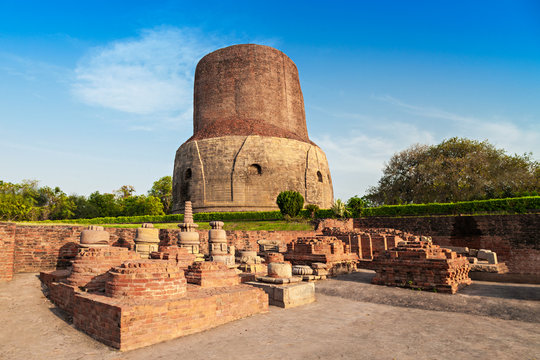
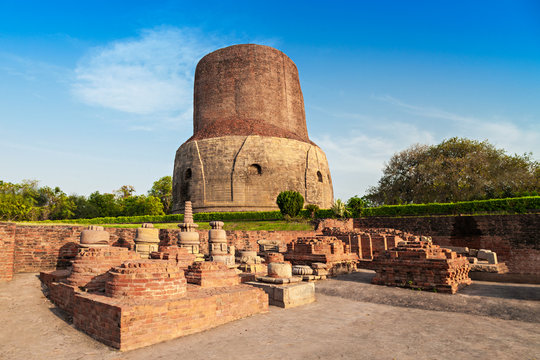

Varanasi, one of the world's oldest living cities, is a spiritual hub located on the banks of the holy Ganges. Known for its sacred ghats, ancient temples, and vibrant rituals, it offers a profound glimpse into India's rich cultural and religious traditions.
Popular Places to Visit:
- Kashi Vishwanath Temple
- Dashashwamedh Ghat
- Manikarnika Ghat
- Sarnath
- Assi Ghat
- Ramnagar Fort

 



Spiritual Experiences:
- Ganga Aarti 🙏
- Boat Ride 🛶
- Gali Exploration 🚶
- Sarnath Visit 🧘


Packages & Pricing
| Package Name | Duration | Inclusions | Starting Price (₹) |
|---|---|---|---|
| Ganges Explorer | 2N / 3D | Ghat & Temple Tour, Ganga Aarti, Boat Ride | 7000 |
| Varanasi Pilgrimage | 3N / 4D | Kashi Vishwanath Darshan, Sarnath Excursion | 10000 |